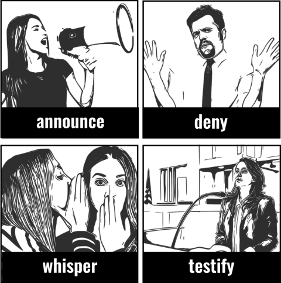
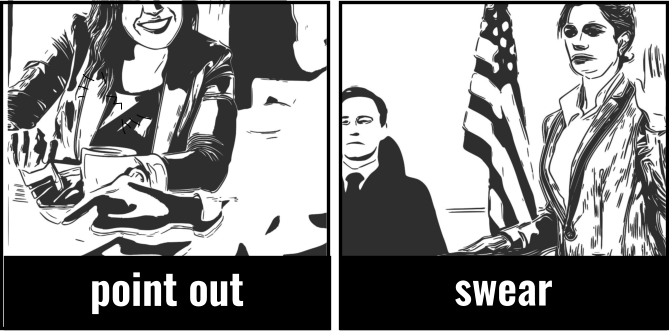

SAY mention: to talk about sb or sth, but without giving details. point out: tell sb sth they had not noticed. express: to convey (a thought or feeling) in words. comment: give an opinion. remark: to say what you have noticed.
PUBLICLY announce: to tell people what has happened or what will happen, in a public statement. state: to say sth publicly or officially. issue a statement: to say or write sth publicly in order to tell people your intentions or opinions. declare: to officially state that a situation or condition exists.
STH TRUE claim: to say that sth is true, even though it has not been proved and people may not believe it. maintain: to repeatedly say that sth is true, esp. when other people do not believe you. assert: to state very firmly that sth is true. confirm: to say that what others have claimed to be true is definitely true. testify: to make a formal statement of what is true, esp. in a court of law. swear: to say very firmly that what you have said is the truth. certify: officially say that sth is true. insist: to say and repeat that sth is true. protest: to firmly and repeatedly state that you have not done sth wrong. deny: o say that you have not done sth bad that people say you have done.

AN OPINION argue: to state, giving clear reasons, that sth is true. speak your mind: to say what you think. have your say: to be allowed to say what you think about sth.
RETRACT take back: to say that sth you said previously is not true, esp. because you now know it was unfair or wrong to say it. withdraw: to publicly say that sth you said earlier is not true, esp. sth offensive or unfair you have said about someone. retract: to formally or officially state that sth you previously said is not true.
INDIRECTLY imply: to express or state indirectly. suggest: to say sth in an indirect way, esp. sth bad that you prefer not to say directly. hint: to say sth in a very indirect way, but so that other people can guess what you mean.
UNCLEARLY whisper: to say sth very quietly, using your breath. mutter: angry or complaining in a low voice which is difficult to hear. mumble: to say sth quietly without pronouncing the words clearly. murmur: to say sth in a soft low voice, that is difficult to hear clearly.